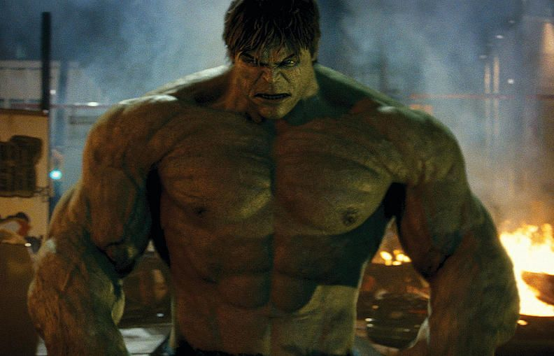
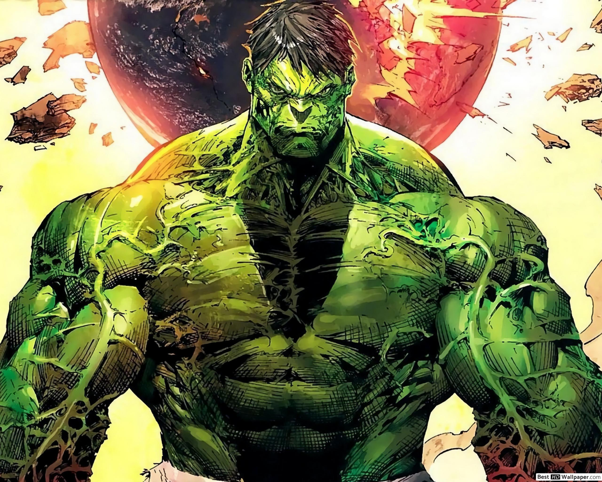
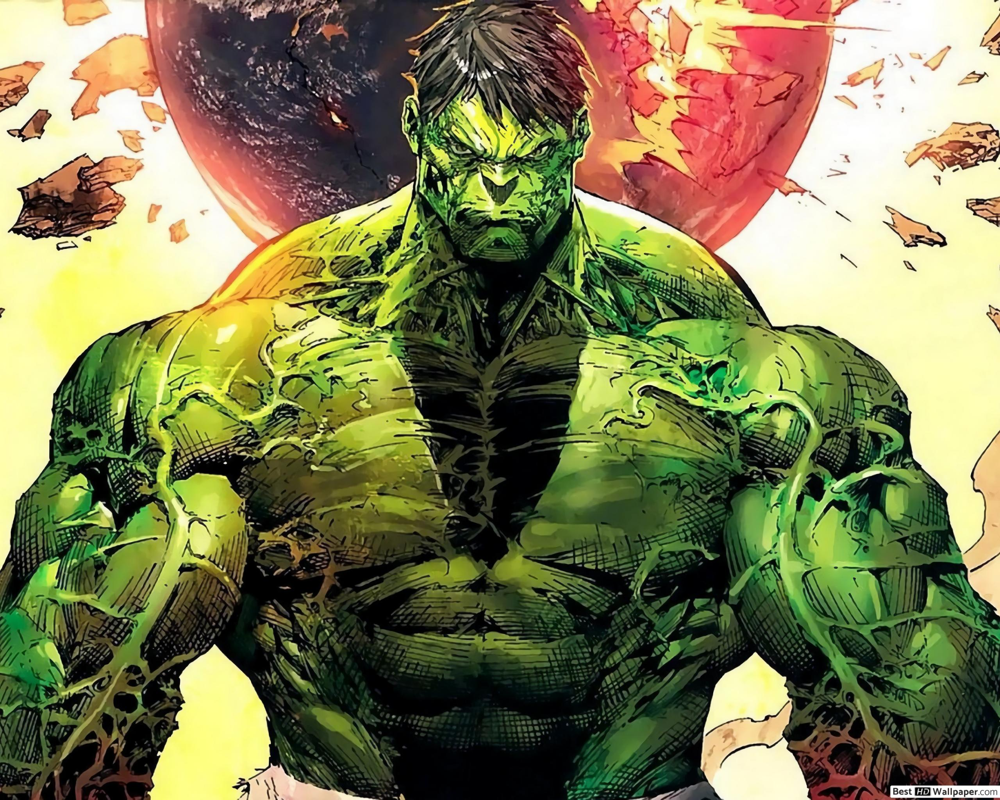

El Increíble Hulk

 


Hulk
¿Quién es?
Antes que nada he de decir que el Hulk de la primera película de la saga del infinito, me gusta mucho más que el siguiente, el de Mark Ruffalo. Venga adiós
El personaje fue creado por los escritores Stan Lee y Jack Kirby siendo su primera aparición en The Incredible Hulk #1 publicado en mayo de 1962. En sus apariciones de cómic, el personaje es a la vez Hulk, un ser humanoide enorme de piel verde, corpulento y musculoso que posee una gran fortaleza física, y su alter ego el Dr. Robert Bruce Banner (o Dr. David Bruce Banner), un físico físicamente débil, socialmente retraído y emocionalmente reservado, las dos personalidades existentes como independientes y con resentimiento de la otra. Después de una exposición accidental a los rayos gamma durante la detonación de una bomba experimental, Banner se transforma físicamente en Hulk cuando está sometido a estrés emocional, a su voluntad o en contra de ella, lo que a menudo lleva a destrozos y conflictos que complican la vida civil de Banner. El nivel de fuerza de Hulk se transmite normalmente de forma proporcional a su nivel de ira. Comúnmente retratado como un salvaje furioso, Hulk ha sido representado con otras personalidades basadas en la mente fracturada de Banner, desde una fuerza descerebrada y destructiva hasta un brillante guerrero o genio científico por derecho propio. A pesar del deseo de soledad tanto de Hulk como de Banner, el personaje tiene un gran elenco de apoyo, que incluye al amor de Banner, Betty Ross, su amigo Rick Jones, su prima She-Hulk, sus hijos Hiro-Kala y Skaar, y sus cofundadores del equipo de superhéroes, Los Vengadores. Sin embargo, su poder incontrolable lo ha llevado a entrar en conflicto con sus compañeros héroes y otros.